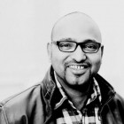
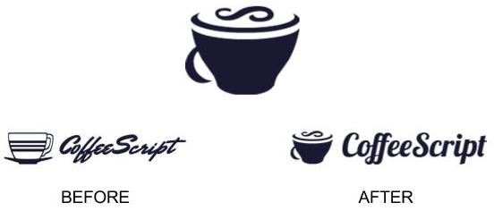

|
RAMESH PALLIKARA |
NEW MEDIA DESIGN &
PROGRAMMING |

CURRICULUM VITAE
|
DEVELOPMENT TOOLS: Javascript, Coffeescript, NodeJS, JQuery, PHP, Ruby, GitHub, Linux, Vim DESIGN & DOCUMENTATION: Adobe Creative Suite, Office Suites, HTML, CSS 10+ years expertise in Javascript, PHP, MySQL, HTML, CSS 8+ years experience in Information, Interaction and Interface Design Can speak, read and write
English - native and fluent Excellent communication, presentation and social skills Strong analytical and problem-solving skills Learn quickly and interpret information accurately Capable of effectively communicating at various levels with individuals and groups Enthusiastic, resourceful and enjoys solving problems and innovative challenges PORTFOLIO WEBSITE - www.rameshwashere.tumblr.com INTERACTIVE PORTFOLIO - http://rampall.github.com GITHUB PROFILE - http://www.github.com/rampall FACEBOOK PROFILE - http://facebook.com/rameshpallikara |
WORK EXPERIENCE
5+ Years – Halftime Research Assistant & Teaching Faculty
Department of Design -
Hochschule Anhalt (FH), Dessau
2008 – Present
Completed Projects:
Digital Design Archive - EU Funded Design Archive for design students and researchers
Designed and Developed the frontend and backend implementations
Javascript, PHP, MySQL, HTML, CSS, jQuery, OpenZoom
Involvement:
Taught New Media Design and Programming to Masters
Design students for the past 8 semeseters
- processing, css, flash, actionscript, dreamweaver, scratch
3+ Years –
Freelance Web Developer / Parttime Programming + Design
Berlin-Brandenburg Centre For Regenerative Therapies
Charité - Universitätsmedizin, Berlin
2008 – 2011
Completed Projects:
www.hescreg.eu - EU-Funded Online Collaborative Stem-Cell Research Platform
www.bcrt.charite.de - BCRT website, design and implementation
http://www.rmig.org - RMIG website, design and implementation
Designed and Developed the frontend and backend implementations
In collaboration with the scientists and researchers in bio-informatics at BCRT, Charité
Javascript, PHP, MySQL, HTML, CSS, jQuery, Typo3
Programmer / Web Developer - Fulltime & Freelance
X-Space Design Group GmbH, Munich
Feb 2007 – May
2007 (Fulltime)
June 2007 – Feb 2008 (Freelance)
Completed Projects:
www.schweinerei.de - Adult Dating Website (Currently Offline)
Designed and Developed the frontend and backend implementations
Javascript, PHP, MySQL, HTML, CSS, jQuery, Smarty Templates
Programmer / Web Developer - Freelance
Speedaten.de, Berlin
2007 – 2008
Involvement:
www.speeddaten.de - Online Speed Dating Website
Developed some of the frontend and backend admin, CMS and eTicket implementations
Ruby, Camping, Javascript, PHP, MySQL, HTML, CSS, jQuery
Programmer / Web Developer - Fulltime
Vioma GmbH, Offenburg
Feb 2006 - May 2006
Involvement:
3+ Years - Senior Web Development Engineer - Fulltime
ZOHO Inc, India
Jun 2001 - Jan 2004
Involvement:
EDUCATION
PhD in Art and Design * ongoing, part-time student
Fakultät Gestaltung,
Bauhaus University, Weimar, Germany
2009 – Present
Master of Art in Integrated Design
Hochschule Anhalt, Bauhaus University, Weimar, Germany
2004 – 2006
Bachelor of Architecture
National Institute of Technology, Tiruchirapalli, India
1996 – 2001
WORK / PROJECTS
Coffeescript Logo Design

Pattern Language for the New Media
PhD Dissertation and research project at Bauhaus University Weimar
"Happy Times"
Animation Trailer for the "ueber arbeiten" film festival on Work, Globalization and Politics - Nov 2006
Übercode and The Code Bazaar
Masters Thesis 2006 Apr 2006 - Oct 2006
Represented "German Films" and "AG Kurzfilm"
at the New York University's Next Reel International Film Festival - Sept-Oct 2005
I took the red pill
animation movie - my wintersemester 2004 project was among the 11 student films selected for the "Next Generation 2005" programme by German-Films and has been screened at several film festivals through 2005 and 2005.
Concept + Storyboard 2005
for an technical educational film to be used as a tool for explaining to CS students - the concept and inner functioning of "Databases".
The demo@schools Project
Volunteer 2002 - 2004 aimed at promoting the adoption of free software at schools and higher educational institutions in India.
Line of Force
An Integrated High Density Habitat for the new millenium
S.A.W.C.H.U - Sri Aurobindo World Center for Human Unity
an award winning community hall, designed and executed under the supervision of Architect Anupama Kundoo - as part of my bachelors in architecture program.
Holo Minerva
6000US$ - First prize winning design entry, 1994
AWARDS & RECOGNITION
REFERENCE CONTACTS
Prof. Rochus Hartmann (Faculty / Research Supervisor / Project Manager)
Department of Design
Hochschule Anhalt, Dessau
r.hartmann@design.hs-anhalt.de
+49 (0)340 . 5197 1718
Mr. Joeri Borstlap – BCRT Head, Technical Coordinator
Berlin-Brandenburg Center for Regenerative Therapies
Charité - Universitätsmedizin Berlin
Augustenburger Platz 1
D-13353 Berlin, Germany
+49 30 450 539400
INFOGRAPHIC TIMELINE